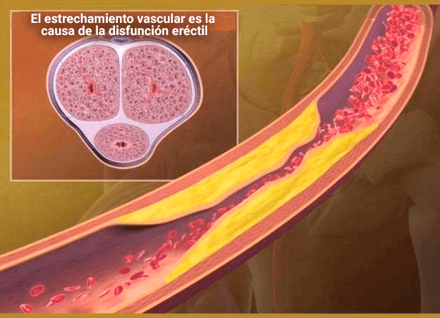

الانتصاب القوي حتى بعد عمر 60 عامًا - تم العثور على وسيلة فعالة جديدة لزيادة فاعلية الذكور - مجموعة من المواد الطبيعية عليك إستخدامها و سوف تحصل على قوة لا مثيل لها .
و النتائج أظهرت ان هذه المواد الطبيعية إذا تم خلطها معاً سوف تحصل على تركيبة طبيعية 100% لزيادة قوتك الجنسية الذكورية
في ربيع عام 2023 كان الأمر لا يصدق على الإطلاق عندما صفقت الغرفة بأكملها للعالم على خشبة المسرح لمدة 10 دقائق في المؤتمر السنوي لعلماء الذكورة وعلماء الجنس . كان هذا العالم Davis Viprakasit أحد أفضل أطباء المسالك البولية العالميين . لقد كان هو، مع مجموعة من العلماء، هم الذين كشفوا عن التركيبة السحرية للقضاء على مشاكل فاعلية الذكور الناجمة عن الهرمونات اللوتينية وهرمونات النمو الجريبي التي تنتجها الغدة النخامية.
Davis Viprakasit جراح المسالك البولية . مدير مساعد لبرنامج الإقامة . مدير برنامج زمالة علم الباطنة . مدير برنامج الحجر متعدد التخصصات . أستاذ جراحة المسالك البولية حصل على تعليمه كاملأ في الولايات المتحدة الأمريكية . .
وبما أن هذه التركيبة هي إختراع فريد من نوعه ة إكتشاف مذهل ، فقد قررنا اليوم ان ننشرها لكن لتعم الفائدة للجميع و أيضاً سوف نوضح لكم منتج طبيعي في نهاية المقال يحتوي على مكونات التركيبة و من الممكن شرائه في الجزائر بسعر مخفض وبدون رسوم خاصة. يمكن لجميع الرجال الحصول عليه.
بحلول سن الأربعين، يصبح العديد من الرجال عاجزين جنسيًا
وفي وقت لاحق، فإنهم معرضون لخطر الضعف الجنسي . في العقد الماضي، حذرنا العلماء من أن مشاكل القدرة الجنسية لدى الذكور أصبحت أكثر شيوعًا. يعلم الجميع أسباب الضعف المتزايد للنشاط الجنسي: نمط الحياة السيئ والعادات السيئة، وسوء التغذية، والظروف البيئية السيئة، وما إلى ذلك.
 بسبب النقص المطول في الفاعلية، تتشكل رواسب الجير في عروق العضو الذكري مشاكل بالإنتصاب مما يؤدي في النهاية إلى تطور العجز الجنسي الكامل.
مراحل وعواقب العجز الجنسي
.jpeg)
1.مشاكل عرضية في الفاعلية، مثل بعد شرب الكحول . في بعض الأحيان "لا تشعر بالرغبة في ممارسة الجنس". يعزوها معظم الناس إلى العمل الجاد والتوتر والظروف الأخرى. ومع ذلك، فهذه هي العلامة الأولى على أن الوضع سوف يزداد سوءًا بمرور الوقت.
2. مشاكل الطاقة المشتركة. حتى لو حصلت على الانتصاب، فالأمر ليس صعبًا كما كان من قبل. ينخفض العضو الذكري أثناء الجماع أو عند وضع الواقي الذكري. ويحدث هذا عادة عندما يبدأ الرجال بالتفكير في المشكلة، لكن تصرفاتهم تقتصر في بعض الأحيان على تناول المنشطات الجنسية الكيميائية .
3. تعمل هذه المقويات الجنسية الكيميائية في بعض الأحيان فقط. و لكن بعد ذلك تنخفض الرغبة الجنسية بشكل كبير. يصبح الرجل سريع الانفعال، وتختفي إرادة الفعل والرغبة. تبدأ المشاكل العائلية: المعارك المتكررة في الأسرة، والخيانة الزوجية للإناث، كل شيء يمكن أن يؤدي إلى الطلاق.
4. العجز التام. ولا حتى المقويات الجنسية الكيميائية ستساعدك .العديد من الرجال في هذه المرحلة يشعرون بالوحدة - نادراً ما تفتقر النساء إلى الرغبة في العلاثة ، وإذا كان الأمر كذلك، فإنهن يعانون فقط في العلاقة. يتطور الاكتئاب بنفس طريقة تطور المشاكل الصحية الجسدية لدى الرجال (ضعف الإنتصاب ). تم تصميم جسمنا للقيام بوظيفة التكاثر الأساسية، وبمجرد فقدان هذه الوظيفة يتدهور الجسم بسرعة كبيرة.
في حالة عدم وجود انتصاب لفترة طويلة، يتباطأ تدفق الدم إلى أعضاء الحوض، مما يؤدي إلى تطور العديد من المشاكل الخطيرة.
تظهر علامات الضعف الجنسي بشكل مختلف من شخص لآخر وقد تكون نتيجة لعوامل نفسية أو جسدية. إليك بعض العلامات المشتركة التي قد تشير إلى وجود مشكلات في القدرة الجنسية:
- صعوبة في الانتصاب: عدم القدرة على الحفاظ على انتصاب القضيب بشكل كافٍ لتحقيق العلاقة الجنسية.
- فقدان الرغبة الجنسية: قد تلاحظ فقدان الاهتمام أو الرغبة في النشاط الجنسي
- تغيرات في نمط الإثارة: يمكن أن يكون هناك تغيرات في استجابة الجسم للمثيرات الجنسية
- القلق الزائد أثناء النشاط الجنسي: توجد مخاوف متكررة بشأن الأداء الجنسي والضغوط النفسية
- التأخر في القذف أو الانتهاء المبكر: مشاكل في التحكم في عمليات القذف قد تكون علامة على مشكلات جنسية.
- ألم أثناء الجماع: قد يكون وجود ألم خلال العلاقة الجنسية إشارة إلى مشاكل صحية أو جنسية
- تغيرات في حجم الخصية أو الثديين: قد يكون لبعض الحالات الطبية أثر على هيكل الأعضاء التناسلية.
- تغيرات في مستويات الطاقة والتعب: الشعور المستمر بالتعب أو فقدان الطاقة يمكن أن يكون علامة على قضايا صحية تؤثر على الوظيفة الجنسية.
- تغيرات في المزاج: الشعور بالاكتئاب أو القلق قد يؤثر على الرغبة الجنسية والأداء
- تغيرات في نمط النوم: الاضطرابات النوم قد تكون مرتبطة بمشاكل الضعف الجنسي
عند استخدام المنتجات الكيميائية لتحسين القدرة الجنسية، يجب أن يكون الفرد على دراية بالمخاطر المحتملة التي قد تنجم عنها، وعليه أن يفهم أنها لا تخلصك من الأسباب الأسباب الجذرية لضعف الانتصاب أو انخفاض الرغبة الجنسية و لكن هي فقط مؤقتة .
أضرار على الصحة الجسدية نتيجة إستخدام المواد الكيميائية لزيادة الإنتصاب
بالطبع هناك العديد من المخاطر و هي كالأتي :
- 1. ارتفاع ضغط الدم: يعتبر ارتفاع ضغط الدم من بين الآثار الجانبية الشائعة للمواد التي تزيد من الانتصاب. قد تؤدي هذه المضاعفة إلى مشاكل صحية خطيرة، خاصة بالنسبة للأفراد الذين يعانون بالفعل من مشاكل في ضغط الدم.
- 2. الصداع: الصداع يعتبر أحد الأعراض الجانبية الشائعة، والتي قد تكون مزعجة وتؤثر على راحة الفرد.
- 3. اضطرابات في المعدة: قد تتسبب بعض المواد الكيميائية في تهيج المعدة والقلق الهضمي.
- 4. تأثير على الرؤية: هناك تقارير عن حالات فقدان مؤقت للرؤية أو زيادة في الحساسية للضوء كنتيجة لاستخدام بعض هذه المواد.
- 5. مخاطر للأشخاص ذوي المشاكل الصحية المزمنة: لا يجب استخدام هذه المواد بدون استشارة خبراء لدى الأشخاص الذين يعانون من مشاكل صحية مزمنة مثل مشاكل القلب أو السكري.
- 6. التأثير على الحياة العائلية: قد يتسبب الاعتماد المفرط على هذه المواد في التأثير على الحياة العائلية والعلاقات الشخصية.
فهوم ضعف الانتصاب وكيف يمكن تعريفه
ضعف الانتصاب هو حالة تتمثل في عدم القدرة على تحقيق أو الحفاظ على انتصاب قوي وكافٍ لدعم النشاط الجنسي بشكل طبيعي.
ما هي الأسباب الشائعة والمحتملة لحدوث ضعف الانتصاب؟
هناك العديد من العوامل و هي كالأتي :
- العوامل النفسية:
- القلق والضغط النفسي.
- الاكتئاب
- الشد العاطفي.
- العوامل العلاقية:
- مشاكل العلاقة مع الشريك الجنسي.
- قضايا عاطفية .
- العوامل النمطية:
- السمنة ونقص اللياقة البدنية.
- التدخين وتعاطي التبغ.
- ارتفاع ضغط الدم ومشاكل القلب.
- ارتفاع مستويات الكولسترول.
- العوامل الهرمونية:
- نقص هرمون التستوستيرون.
- اضطرابات في الغدة الدرقية.
- المشكلات العصبية:
- المشاكل العصبية مثل التصلب المتعدد.
- العوامل الجراحية أو الإصابية:
- الجراحة أو الإصابات في منطقة الحوض أو العمود الفقري.
- تأثير المواد الكيميائية :
- بعض المواد الكيميائية قد تسبب آثارًا جانبية تؤثر على الانتصاب.
- استهلاك المواد السامة:
- استهلاك كميات زائدة من الكحول أو المخدرات.
ما هي المواد الطبيعية التي يمكنها المساعدة على التخلص من مشاكل الضعف الجنسي و ضعف الإنتصاب ؟
هذه المكونات هي :
-
الجينسينج الاحمر

يحتوي الجينسينج الاحمر على مركبات مضادة للالتهابات مثل الصابونين تقضى على مشاكل البروستات ويحتوي على مضادات للميكروبات والفيروسات ويحتوي مضادات للأكسدة تنشط المناعة مما يقضي على مشاكل التبول الناتجة عن مشاكل البروستات -
نبات القراص

يساعد تناول مستخلص نبات القراص بانتظام على حماية الرجال من العديد من المشكلات التي قد يتعرض لها مع التقدم في العمر، مثل: مشكلة تضخم البروستاتا -
الماكا

تساعد على التخلص من الضعف الجنسي و يمكن أن تساعد جذور الماكا على التخلص من ضعف الانتصاب -
الزنجبيل

يوجد في الزنجبيل فيتامين أ وفيتامين ج وفيتامين هـ وبيتا كاروتين والزنك، وجميع مضادات الأكسدة القوية التي تدافع عن البروستاتا من الجذور الحرة الضارة التي تُسرع تطور التضخم -
تونكة علي

تناول تونكات علي بانتظام إلى تحفيز الإثارة الجنسية، وتحسين ضعف الانتصاب لدى الرجال، كما اتضح أنه يحسن حركة الحيوانات المنوية وتركيزها، مما يزيد من خصوبة الذكور - التورين التورين هو حمض أميني يسهم في تحسين الوظيفة الجسدية والأداء الرياضي، مما يمكن أن يكون له تأثير إيجابي على القوة الجنسية.
إذا إستطعت إيجاد و خلط هذه المواد سوف ينتج لك خليط معجزة للتخلص من مشالك الضعف الجنسي و مشاكل ضعف الإنتصاب .
و لكن للأسف هذه المواد من الصعب إيجادها لأنني حاولت بنفسي العديد من المرات إيجادها و لكن كان على إستيرادها من اوروبا لتجربتها و بالفعل إستوردته من اوروبا و جربت التركيبة و كانت النتائج رائعة !
هل هناك أي أمل للناس أن تجد هذه المكونات ببساطة ؟
للأسف لا لانه من الصعب إيجادهم و لكن عليكم البحث جيداً من الممكن إيجاد مكملات غذائية الأن تحتوي على هذه المكونات حتى لو بنسبة بسيطة . و لكن بالطبع أنصح الجميع بهذه المكونات و النباتات
الأن جئنا لكم بمكمل غذائي جزائري الصنع و تم إستيراد مكوناته من اوروبا و هو يحتوي على جميع المكونات التي ذكرها الطبيب بالأعلي و هو منتج طبيعي 100% .
المكمل الغذائي RHINOXX

هو مكمل غذائي طبيعي يحتوي على مواد طبيعية 100% و كلها من خير الطبيعة و هو مصنوع في الجزائر
مكونات المكمل الغذائي RHINOXX :
- التورين
- تونكة علي
- الزنجبيل
- الماكا
- نبات القراص
- الجينسينج الاحمر
- و أيضاً بعض المكونات مثل : " غوارانا - سيلينيوم - كافيين - فيتامينات ب1-ب6-ب12 "
فوائد RHINOXX :
- يمنع القذف المبكر
- يساعد على زيادة القدرة الجنسية
- التخلص من مشاكل البروستات
- التخلص من إلتهاب البروستات
- زيادة الحيوانات المنوية
كيف يمكنكم الحصول على المكمل الغذائي RHINOXX في الجزائر ؟
يباع المنتج عن طريق الإنترنت . و لذلك الشركة المصنعة في الجزائر أقامت مسابقة لجميع سكان الجزائر يمكنك المشاركة في المسابقة و الحصول على تخفيض قد يصل إلى 65% عند شرائك دورة RHINOXX
المشاركة في مسابقة التخفيض من هنا
للمشاركة في المسابقة كل ما عليك هو الضغط على زر SPIN للحصول على تحفيض قد يصل إلى 65%

 SPIN
SPIN

5999 peso
التعليقات :
جمال
شريتو هاد مكمل ،بزاف هايل ،ننصحكم به👍
.jpg)
شوقي
رينو ا نقضلي زواجي،راني فرحان بزاف كي لقيت هاد منتوج
.jpg)
محمد
سيييت شحال من حاجة،مي رينوووو مكاش كما هو،فوووور يعطكم صحا👌
.jpg)
خليل
عندي شهاز ملي شريتو ،قوووووة ،فووور هدا منتج ،مستنيش نتائج كما هك👍💪
.jpg)
فرحان
انا كمنديتو بارح مزال ملحقنيش،انشاء لله اليوم الحقولي امانتي .
مصطفى
هذا مكمل بزاااف هايل ،سيينا انا و رجلي شحال من حاجة مي بلا فائدة ،مي كي سيينا RHINOXX حاجا وحدخرا كامل هدا tooooop مكاش كما رينو👍
عبد الخالق .
هذا مكمل عاوني نتخلص من بروستات ،كنت نسوووفري مي دوك الحمد لله،تهنت من هذا مشكل RHINOXX حل مشاكلي في شهرين، والآن أصبح قضيبي 19.2 سم :)
شفيق
سييت شحال من منتوج مي عاوني غير RHINOXX
أسـامة
تهنييت من مشكل بروستات كنت نعاني دوك حمدالله ننصحكم بيه متندموش عليه منتوج طبيعي 100%
ظافر
راني فرحان بزاف كي عودت وليت بقوتي بالفضل RHINOXX تهنيت من مشاكل بروستات 🔋💪
محمد
إستلمت دورة RHINOXX البارحة، وكل شيء على ما يُرام. إن مشاعر القوة والحيوية مذهلة للغاية)) أخيراً تغلبت على كل المشاكل المتعلقة بالانتصاب، يا له من امر مذهل)) RHINOXX ، لا أقذف أبدًا في أقل من 20 دقيقة. وزوجتي تصـل أخيرًا إلى هزات حقيقية.
ربيع
قال شقيقي انّ هذا المنتج منتشر في الجزائر بصورة كبيرة.. والجميع ينصح به... سوف أطلبه و اجربه .
عبد الرحيم
أستخدمه منذ أسبوعين. لكي أكون صادقاً، لم أكن اتوقع مثل هذه النتائج المذهلة. لقد إستعدت قوتي الجنسية .
منال
راجلي ولى قوي كي حصان ،ولى ميتلڨنيش ،علاقتنا ولات متعة،يعطكم صحة على هذا منتوج.💪👍👍